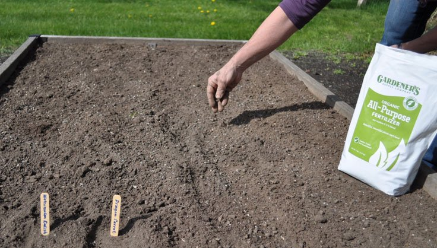
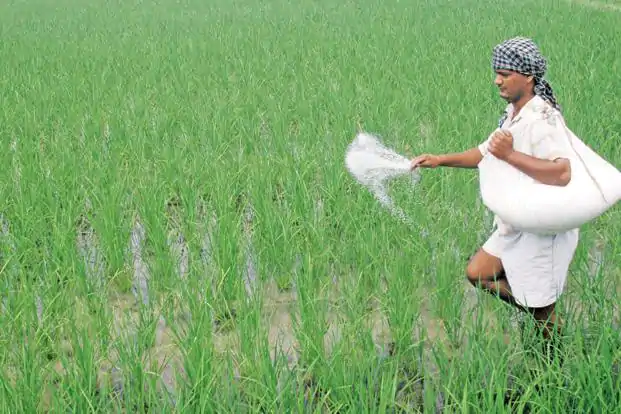
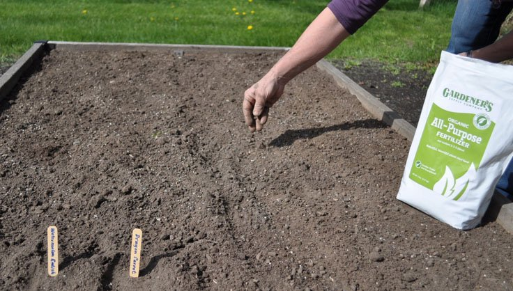
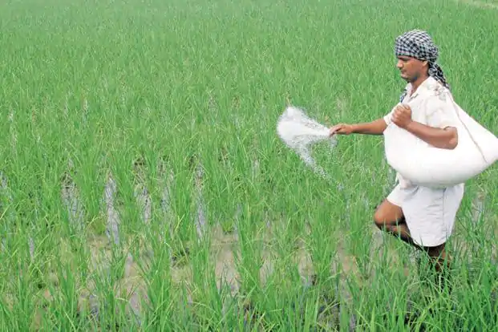
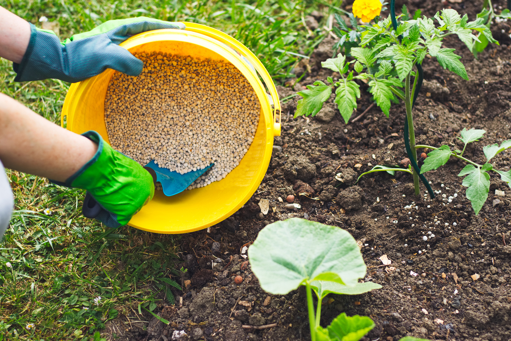

It includes Distribution of cheap chemical or non-chemical fertilizers among the farmers. It amounts to the difference between price paid to manufacturer of fertilizer (domestic or foreign) and price, received from farmers. This subsidy ensures: Cheap inputs to farmers, Reasonable returns to manufacturer, Stability in fertilizer prices, and Availability of fertilizers to farmers. In some cases this kind of subsidies are granted through lifting the tariff on the import of fertilizers, which otherwise would have been imposed.
